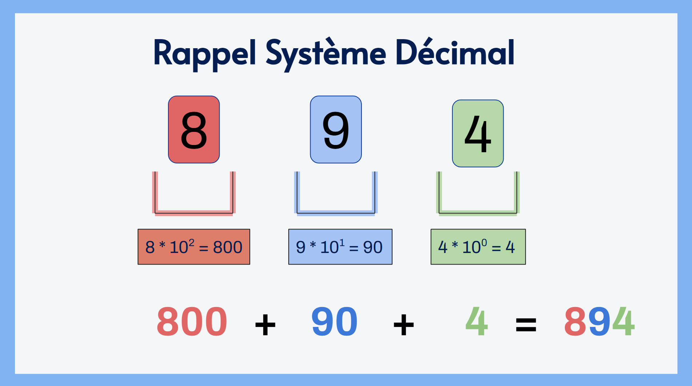
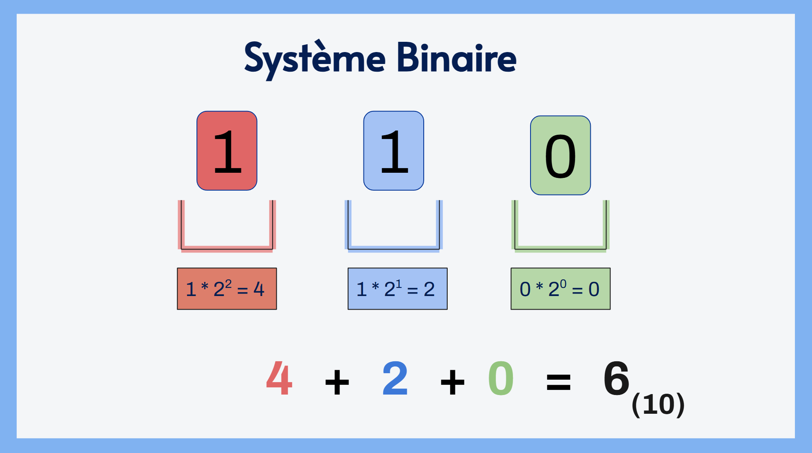
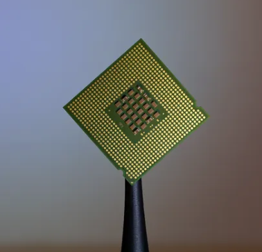
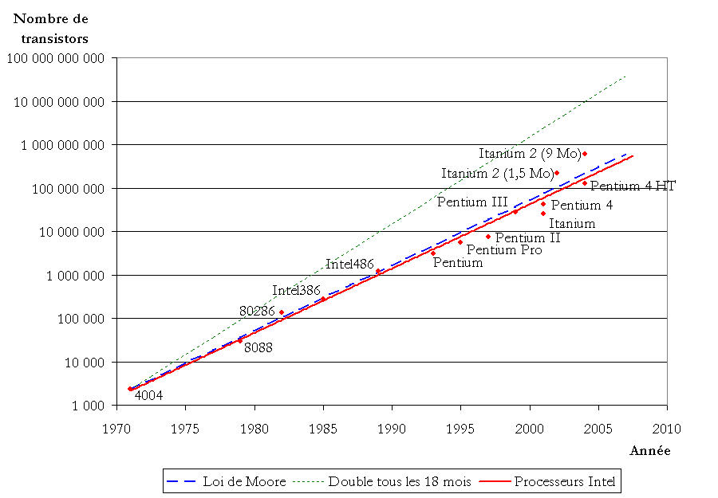
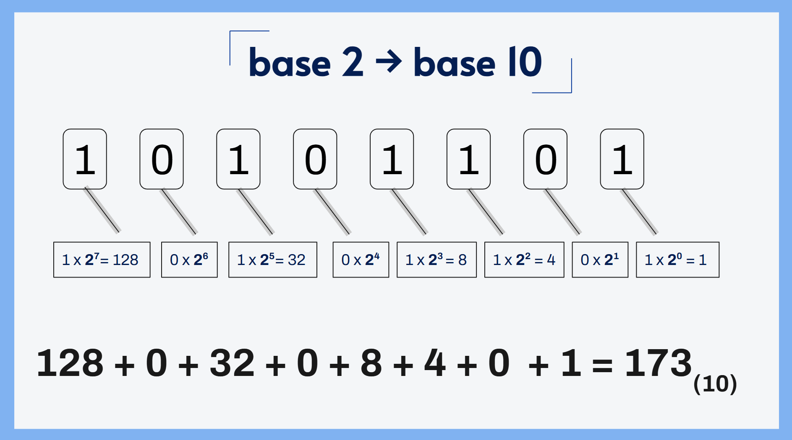
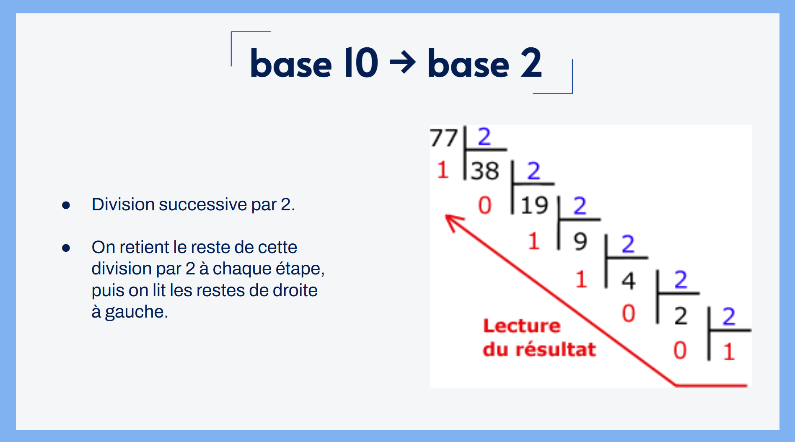
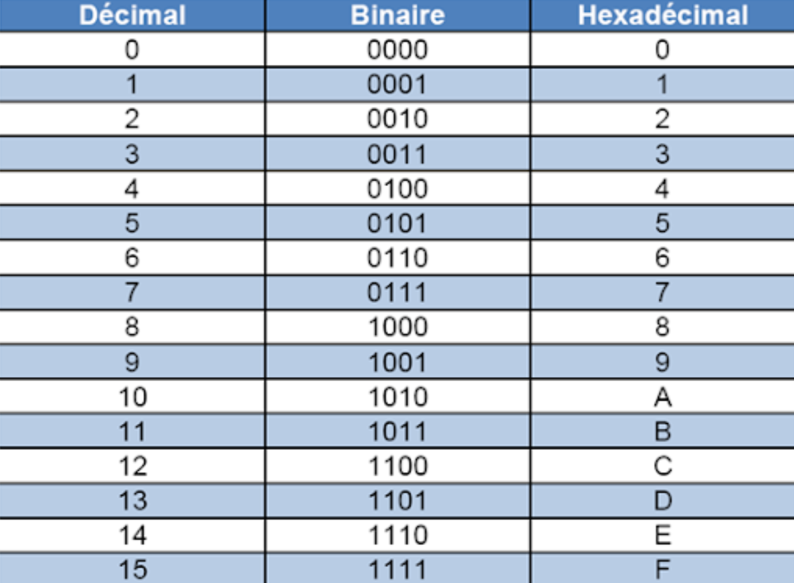

Thème 1 - Représentation des données¶
1. Système décimal, binaire et hexadécimal.¶
Rappel des bases¶
Voici un petit jeu simple : décomposez 894.
Rappel visuel système décimal

Eh oui, vous avez 10 doigts  et on compte en "paquet" de 10, un hasard ?
et on compte en "paquet" de 10, un hasard ?
On appelle le système sur lequel on calcul, le système décimal.
Activité débranchée "Binary cards"
Questions :
- A quoi correspondent les chiffres sur les cartes ?
- Pourquoi je n’ai pas besoin d’une carte « 3 »
- Avec 3 cartes (1, 2, 4), combien de nombres différents peut-on représenter ?
- Représentez les nombres 0, 23, 68, 127, ...
- Avec 6 cartes (jusqu’à 32), quel est le plus grand nombre que l’on peut représenter ?
Plus loin !
- A quoi correspond la carte la plus à droite ?
- Savez-vous combien de bits on utilise dans un ordinateur pour représenter un entier classique ?
- Représentez le nombre 23, puis ajoute 5 en manipulant uniquement les cartes (sans calcul mental).
Exemple visuel système binaire

1.2 Exercices¶
Sortez une feuille !!!
Convertissez les nombres suivants dans leur base correspondante :
a. 7810 → ?2
b. 15710 → ?2
c. 0101 10102 → ?10
d. 0111 11112 → ?10
e.  Sur deux octets : 457710
Sur deux octets : 457710
Correction
a. 0100 11102 (sur un octet)
b. 1001 11012 (sur un octet)
c. 9010
d. 12710
e. 0001 0001 1110 00012
2. Mais au fait... pourquoi on parle de bits ?¶
2.1 L'origine des ordinateurs¶
Petit question simple : Savez-vous ce que c'est ?


Le transistor est le composant fondamental des ordinateurs. Il détermine (en partie), la puissance de calcul de vos ordinateurs.
Un transistor permet de faire passer un courant électrique, ou non.
On peut traduire cela par : courant électrique, l'ordinateur comprend 1.
Pas de courant électrique, l'ordinateur comprend 0.
Dans quel composant de votre ordinateur se trouvent ces transistors ?
Définition : Le processeur est un composant électronique, composé de milliard de transistors. C'est lui qui se charge de traduire le langage machine (suite de bits) en instructions.

2.2 La loi de Moore¶
La loi de Moore est la suivante : "l'évolution de la puissance de calcul des ordinateurs double tous les deux ans".

Croissance du nombre de transistors dans les microprocesseurs Intel par rapport à la loi de Moore.
Nombre de transistors de nos jours
En 1975, il y avait environ 10 000 'transistors' dans les ordinateurs.
Ce nombre double tous les 2 ans.
De 1975 à 2026, il y a 51 ans.
- Combien de fois a-t-on doublé de nombre de transistors de 1975 à 2026 ?
- Quel serait le nombre de transistors contenus dans un microprocesseur Intel en 2026 ?
Correction
-
51 * 12 mois = 612 périodes
612 / 24 mois = 25.5 → 26
→ On a doublé 26 fois le nombre de transistors depuis 1975 -
10 000 * 226 = 671 088 640 000
→ En 2026, les microprocesseurs contiendraient plus de 670 milliards de transistors !!
3. Les conversions des bases¶
Comme vous l'avez compris, vos ordinateurs ne comprennent et n'interprètent uniquement 0 et les 1.
Et vous, petits humains, comprenez et interprétez tous les chiffres de 0 à 9.
Vous allez faire tous types de conversions à la main, afin de vous mettre dans la peau de votre ordinateur  .
.
3.1 De la base 2 à la base 10¶
→ Dans un nombre binaire, chaque bit correspond à une puissance de 2.
Sur un octet, les puissances vont de 20 à 27.
Exemple visuel

Méthode de conversion 
Une méthode que j'aime beaucoup, est de passer par un tableau des puissances de 2 :
| 27 | 26 | 25 | 24 | 23 | 22 | 21 | 20 | |
|---|---|---|---|---|---|---|---|---|
| 128 | 64 | 32 | 16 | 8 | 4 | 2 | 1 | somme : |
| 1 | 0 | 1 | 0 | 1 | 1 | 0 | 1 | 173 |
| 1 | 1 | 0 | 0 | 0 | 1 | 1 | 0 | ? |
| 1 | 1 | 1 | 1 | 1 | 1 | 1 | 1 | ? |
| ... | ... | ... | ... | ... | ... | ... | ... | ... |
3.2 De la base 10 à la base 2¶
La méthode est plus délicate, nous pouvons passer par une division successive par deux.
Vous vous rappelez de votre CM1 ..? Et bien nous allons refaire des divisions.
Exemple visuel

Ainsi, 7710 correspond à 10011012
Sortez une feuille !
Convertissez les nombres binaires suivants en bases décimal :
a.
b.
Correction
a. 0100 11102 (sur un octet)
b. 1001 11012 (sur un octet)
4 L'hexadécimal  ¶
¶
Ce système est basé sur des puissances en base 16. Comme nous n'avons pas de chiffres 'supérieur' à 9, nous employons des lettres.
Tableau de correspondance décimal → hexadécimal :
| base 10 | base 16 |
|---|---|
| ... | ... |
| 9 | 9 |
| 10 | A |
| 11 | B |
| 12 | C |
| 13 | D |
| 14 | E |
| 15 | F |
En informatique, le système hexadécimal est utilisé pour faciliter la lisibilité de grands nombres comme les longues chaînes de bits.
Celles-ci sont divisées en groupes de quatre bits et converties en nombres hexadécimaux.
Le système est utilisé notamment pour les adresses sources et des protocoles Internet, dans les codes ASCIII (exemple :  ) ou dans la description de codes couleurs, ou encore en CSS.
) ou dans la description de codes couleurs, ou encore en CSS.
4.1 Conversions¶
Comme indiqué dans le paragraphe précédent, il est facile de convertir des nombres binaires en hexadécimal, vous avez compris la logique de conversion des bases, je vous donne ce tableau magique pour rapidement passer d'une base à une autre :

Tableau de conversion décimal → binaire → héxa
A suivre ...